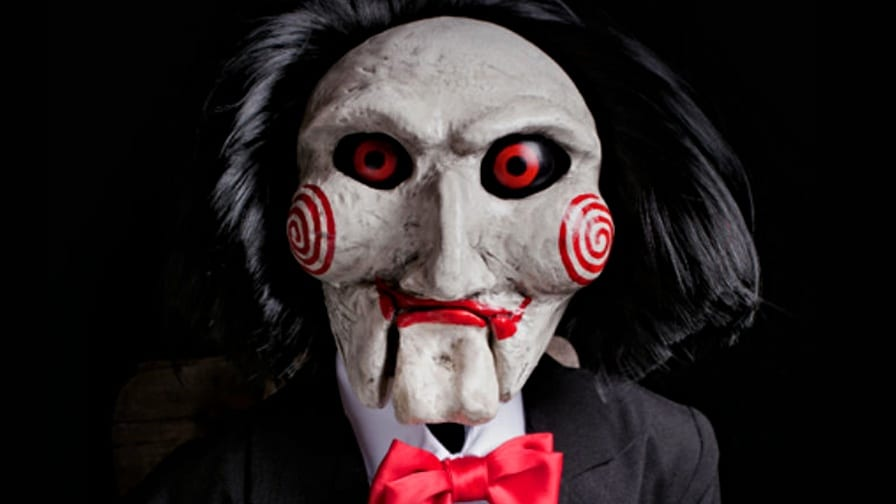

Guia dos melhores Filmes
 Jogos Mortais
Jogos Mortais (Curta-metragem – 2004) Jigsaw é um assassino que possui uma marca registrada: ele deixa em suas vítimas uma cicatriz em forma de quebra-cabeças, que faz com que elas cometam atos igonizantes para se salvar. O detetive David Tapp (Danny Glover) é designado para investigar os assassinatos, bem como a capturar seu autor.
Curiosidade:
Confira alguns fatos curiosos que você talvez não saiba sobre a franquia
Jogos Mortais. 1. O escritor Leigh Whannell e o diretor James Wan criaram
um curta-metragem para mostrar o conceito inicial do primeiro Jogos
Outros Filme: Chuck , Scream